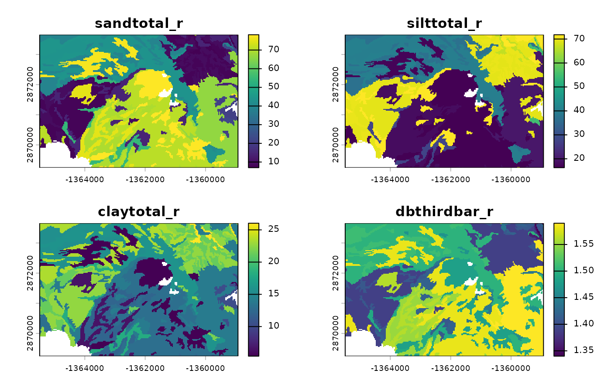
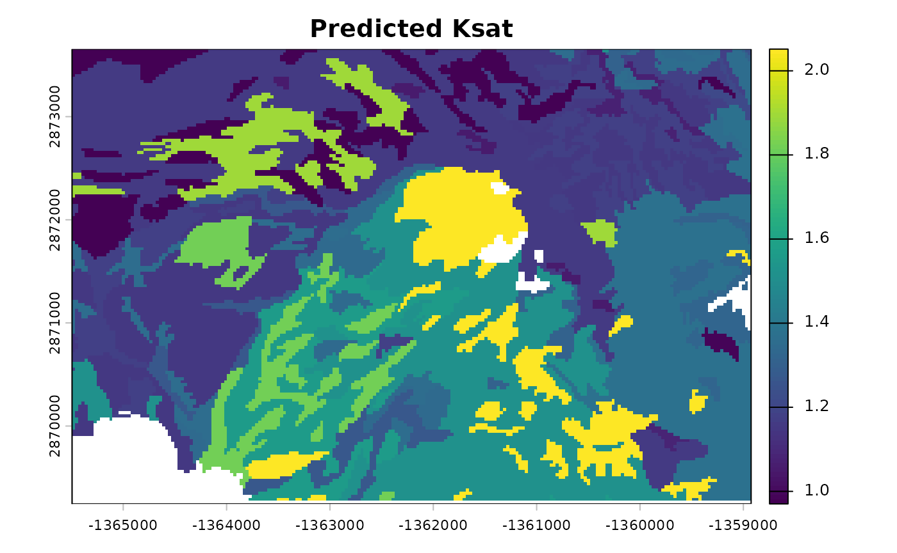

rosettaPTF is designed for efficient batch processing of soil hydraulic parameters. The package supports multiple input formats and offers options for scaling analysis to large datasets.
The core implementation uses the rosetta-soil Python
module, which provides vectorized computation over multiple samples.
This vignette demonstrates key parameters for controlling performance
and handling large-scale analyses.
The run_rosetta() function accepts point data as a
data.frame, where each row represents a single observation.
Let’s use the sample soil property dataset included with the
package.
## 'data.frame': 40 obs. of 8 variables:
## $ areasymbol : chr "MT629" "MT629" "MT629" "MT629" ...
## $ musym : chr "101" "102" "103" "104" ...
## $ muname : chr "McCollum fine sandy loam, 0 to 2 percent slopes" "McCollum fine sandy loam, 2 to 4 percent slopes" "McCollum fine sandy loam, 4 to 8 percent slopes" "McCollum fine sandy loam, gravelly substratum, 0 to 2 percent slopes" ...
## $ mukey : int 144983 144984 144985 144986 1715935 145005 145009 145010 145011 145012 ...
## $ sandtotal_r : num 70.5 70.5 70.5 69.4 22.9 ...
## $ silttotal_r : num 16.5 16.5 16.5 18.4 54.6 ...
## $ claytotal_r : num 13 13 13 12.1 22.5 ...
## $ dbthirdbar_r: num 1.58 1.58 1.58 1.55 1.36 1.51 1.5 1.5 1.51 1.34 ...
## - attr(*, "SDA_id")= chr "Table"
# Run rosetta on the sample property data
system.time({
res_points <- run_rosetta(MUKEY_PROP[, c("sandtotal_r", "silttotal_r", "claytotal_r", "dbthirdbar_r")])
})## user system elapsed
## 0.036 0.004 0.040
head(res_points)## id model_code theta_r_mean theta_s_mean log10_alpha_mean log10_npar_mean
## 1 1 3 0.06848367 0.3644538 -1.743218 0.1666698
## 2 2 3 0.06848367 0.3644538 -1.743218 0.1666698
## 3 3 3 0.06848367 0.3644538 -1.743218 0.1666698
## 4 4 3 0.06732117 0.3692420 -1.756952 0.1695196
## 5 5 3 0.09141165 0.4216557 -2.328181 0.1617329
## 6 6 3 0.07515094 0.3721840 -2.062511 0.1504031
## log10_Ksat_mean log10_K0_mean lpar_mean theta_r_sd theta_s_sd
## 1 1.513559 0.73664754 -0.96871559 0.007619360 0.007308422
## 2 1.513559 0.73664754 -0.96871559 0.007619360 0.007308422
## 3 1.513559 0.73664754 -0.96871559 0.007619360 0.007308422
## 4 1.560079 0.73605374 -0.90607056 0.007724267 0.007847113
## 5 1.208905 -0.05009651 -0.02468582 0.010212554 0.008599210
## 6 1.154052 0.28900526 -0.51745928 0.008641835 0.009100056
## log10_alpha_sd log10_npar_sd log10_Ksat_sd log10_K0_sd lpar_sd
## 1 0.06443168 0.01421511 0.06233830 0.2439499 0.8574815
## 2 0.06443168 0.01421511 0.06233830 0.2439499 0.8574815
## 3 0.06443168 0.01421511 0.06233830 0.2439499 0.8574815
## 4 0.06803551 0.01509591 0.06339274 0.2373924 0.8285559
## 5 0.07416562 0.01629381 0.08756774 0.2143856 1.4935910
## 6 0.06246219 0.01290930 0.08952612 0.2079329 1.0780453Spatial soil property predictions are commonly stored as raster
grids. The run_rosetta() function can process
SpatRaster objects directly, computing predictions for
every cell in the grid.
We’ll use the sample spatial dataset (MUKEY_WCS) to create a continuous raster surface by interpolating soil properties.
# Convert MUKEY_WCS matrix to SpatRaster
data("MUKEY_WCS", package = "rosettaPTF")
data("MUKEY_PROP", package = "rosettaPTF")
r_template <- terra::rast(MUKEY_WCS, crs = "EPSG:5070")
terra::ext(r_template) <- c(-1365495, -1358925, 2869245, 2873655)
names(r_template) <- "mukey"
levels(r_template) <- MUKEY_PROP[, c("mukey",
"sandtotal_r", "silttotal_r", "claytotal_r",
"dbthirdbar_r")]
r_input <- terra::catalyze(r_template)
plot(r_input)
Pass the SpatRaster object to
run_rosetta(). The output is a multi-layer raster
containing mean and standard deviation for each predicted parameter.
# Process the raster stack
system.time({
r_output <- run_rosetta(r_input)
})## user system elapsed
## 8.596 1.413 9.776
# Inspect the layers
names(r_output)## [1] "id" "model_code" "theta_r_mean" "theta_s_mean"
## [5] "log10_alpha_mean" "log10_npar_mean" "log10_Ksat_mean" "log10_K0_mean"
## [9] "lpar_mean" "theta_r_sd" "theta_s_sd" "log10_alpha_sd"
## [13] "log10_npar_sd" "log10_Ksat_sd" "log10_K0_sd" "lpar_sd"
# Plot predicted Ksat (log10 cm/day)
plot(r_output[["log10_Ksat_mean"]], main = "Predicted Ksat")
For large rasters, the cores argument enables block-wise
processing across multiple CPU cores. This parameter controls how the
raster is divided and processed in parallel.
# Divide the raster into blocks and process each block on separate cores
r_output_parallel <- run_rosetta(r_input, cores = 2)Note that with small rasters, as in this example, parallel processing may be significantly slower than sequential processing.
cores: Number of CPU cores to use
for parallel processing. Set to 1 (default) for sequential processing,
or 2+ for parallel block-wise processing. Useful for rasters that are
memory-intensive or computationally demanding.
Input format: SpatRaster objects
are preferred for spatial workflows. The function handles
memory-efficient extraction and output reconstruction
automatically.
For extremely large regions or high-resolution grids, consider processing tiles or regions sequentially:
# Example: process raster in regional tiles
tiles <- terra::getTileExtents(r_input, 125)
results <- terra::merge(terra::sprc(apply(tiles, 1, function(x) {
terra::window(r_input) <- x
run_rosetta(r_input)
})))By default, parameters like alpha, npar,
and Ksat are returned on a logarithmic (log10) scale.
Alternative scales are available via the estimate_type
argument:
# Linear scale estimates
res_linear <- run_rosetta(MUKEY_PROP[, c("sandtotal_r", "silttotal_r", "claytotal_r", "dbthirdbar_r")],
estimate_type = "arith")
# Geometric mean (recommended for log-transformed parameters)
res_geo <- run_rosetta(MUKEY_PROP[, c("sandtotal_r", "silttotal_r", "claytotal_r", "dbthirdbar_r")],
estimate_type = "geo")By default, predictions include the full 1,000-member bootstrap ensemble for uncertainty quantification. The output includes both mean and standard deviation for each parameter.
# The output includes uncertainty estimates
head(res_points[, c("log10_Ksat_mean", "log10_Ksat_sd")])## log10_Ksat_mean log10_Ksat_sd
## 1 1.513559 0.06233830
## 2 1.513559 0.06233830
## 3 1.513559 0.06233830
## 4 1.560079 0.06339274
## 5 1.208905 0.08756774
## 6 1.154052 0.08952612Key considerations for high-throughput analysis:
SpatRaster objects as input for spatial workflows;
the function handles data conversion automatically.cores > 1 to enable parallel block-wise
processing for large rasters.estimate_type based on your application
requirements.